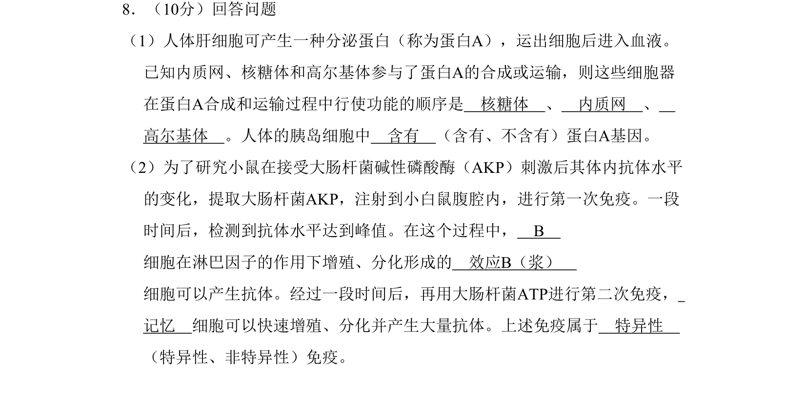
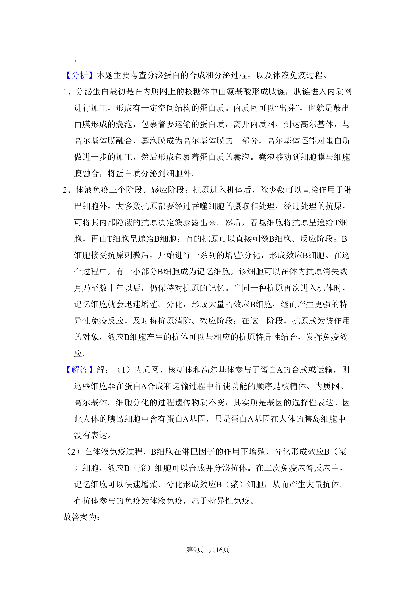
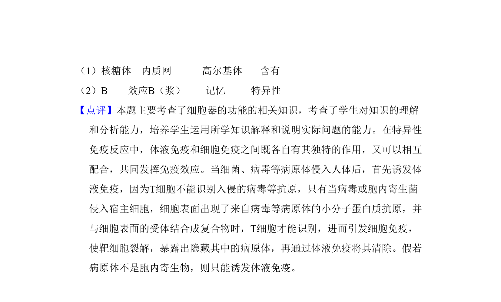

考点：细胞器之间的协调配合 人体免疫系统在维持稳态中的作用

该题考查分泌蛋白的合成运输顺序以及体液免疫的过程与特点。


📄 原 PDF 第 8 页：
素材/真题/吉林/2008-2024·（吉林）生物高考真题/2011年高考生物试卷（新课标）（解析卷）.pdf
8．（10分）回答问题 （1）人体肝细胞可产生一种分泌蛋白（称为蛋白A），运出细胞后进入血液。 已知内质网、核糖体和高尔基体参与了蛋白A的合成或运输，则这些细胞器 在蛋白A合成和运输过程中行使功能的顺序是 核糖体 、 内质网 、 高尔基体 。人体的胰岛细胞中 含有 （含有、不含有）蛋白A基因。 （2）为了研究小鼠在接受大肠杆菌碱性磷酸酶（AKP）刺激后其体内抗体水平 的变化，提取大肠杆菌AKP，注射到小白鼠腹腔内，进行第一次免疫。一段 时间后，检测到抗体水平达到峰值。在这个过程中， B 细胞在淋巴因子的作用下增殖、分化形成的 效应B（浆） 细胞可以产生抗体。经过一段时间后，再用大肠杆菌ATP进行第二次免疫， 记忆 细胞可以快速增殖、分化并产生大量抗体。上述免疫属于 特异性 （特异性、非特异性）免疫。
【考点】2H：细胞器之间的协调配合；E4：人体免疫系统在维持稳态中的作用